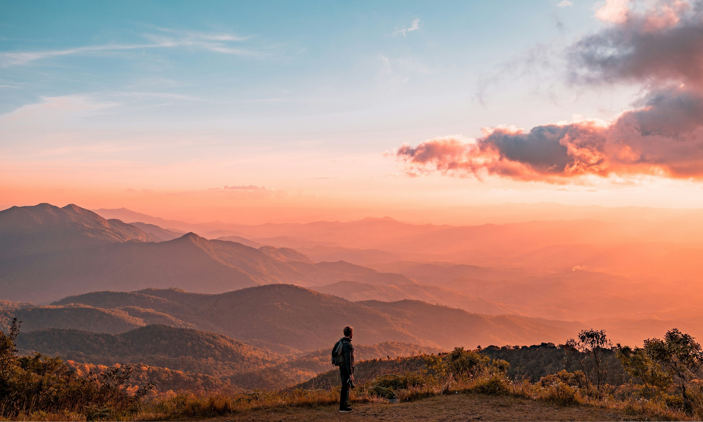
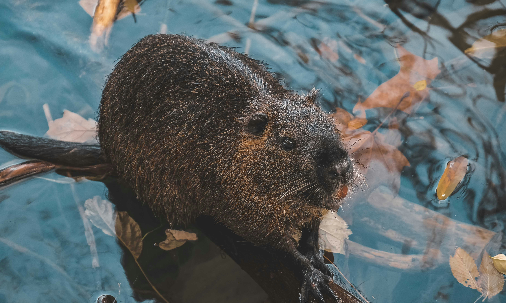

National Parks
The Great Outdoors, Preserved
The United States has 63 national parks, which are congressionally designated protected areas operated by the National Park Service. National parks are designated for their natural beauty, unique geological features, diverse ecosystems, and recreational opportunities, typically "because of some outstanding scenic feature or natural phenomena."

An Honorable Hike
Remembering veterans with wreaths at Great Smoky Mountains National Park.

If You Build It
Can partnering with beavers help restore a long-degraded valley in Rocky Mountain National Park?

Beyond the Views
How smells bring national parks to life — and why we need to protect those aromas.